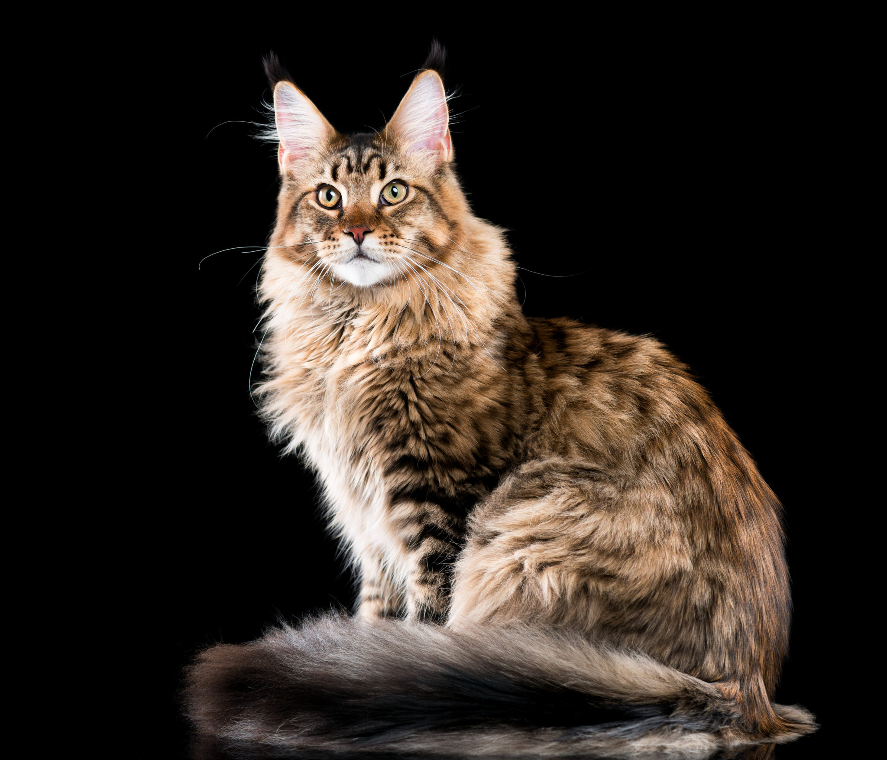
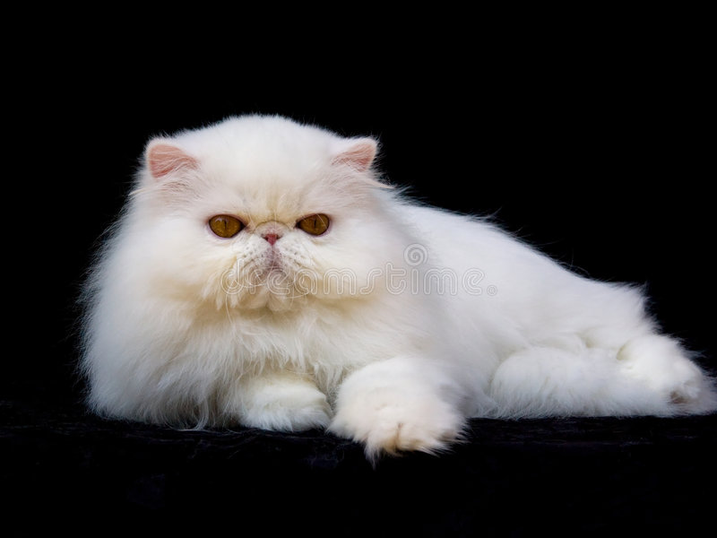
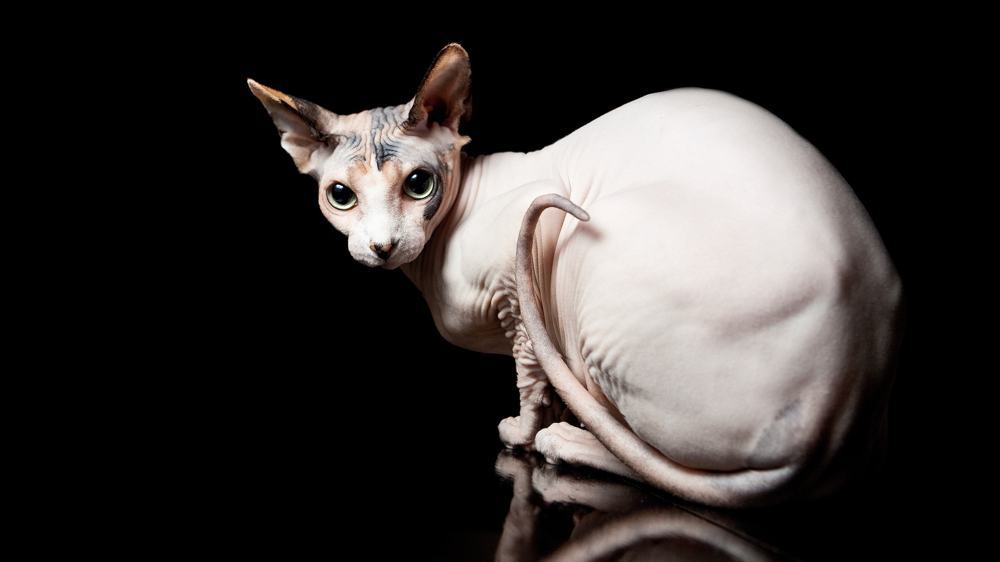
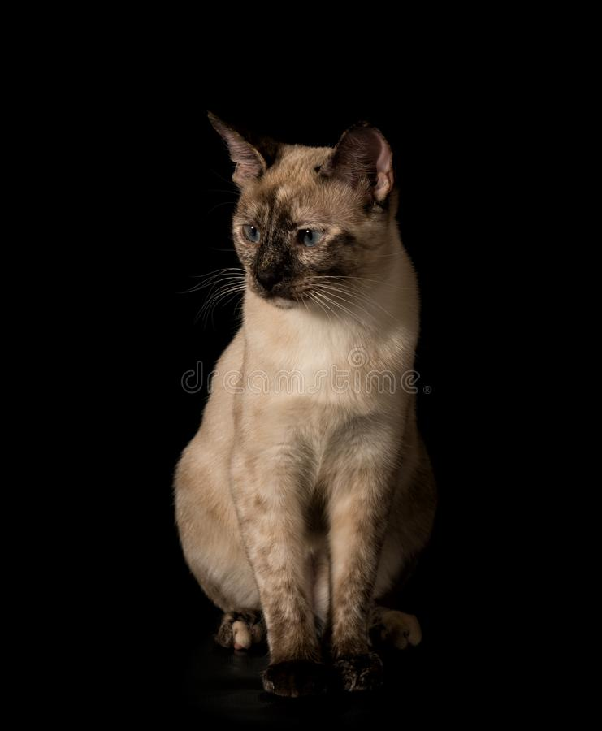
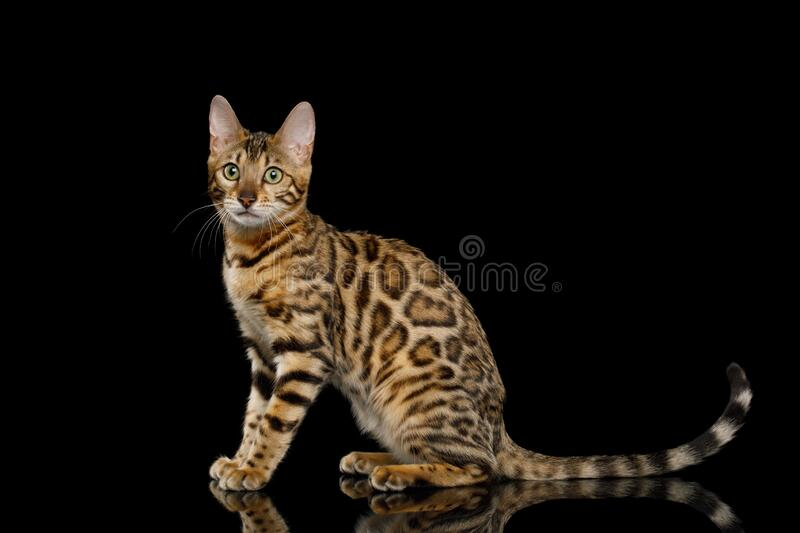
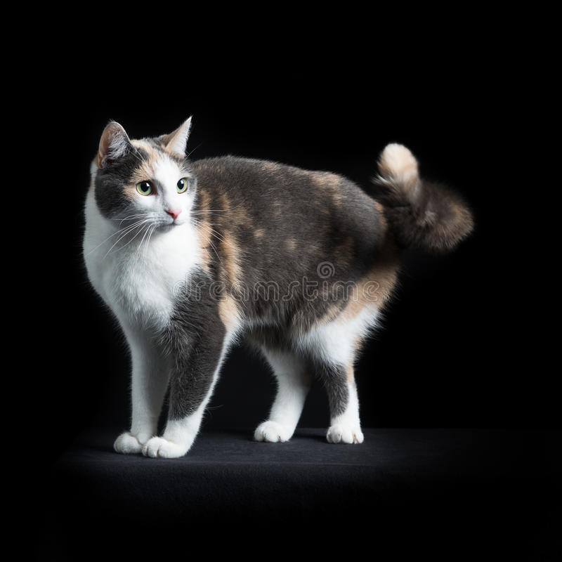

se llega a considerar que son los gatos domésticos, más grandes.Tienen la cabeza cuadrada y los ojos simétricos, por lo que su bella mirada se ha convertido en una de sus señas de identidad. Sus ojos son grandes y las orejas resultan largas y en punta.
En cuanto al cuerpo, recuerda que se trata de una raza especialmente musculosa y fuerte. Sus pelajes puede cambiar, y como te contaremos más adelante, pueden tener un manto de diferentes colores.

Gato Persa
Cariñoso, presumido, de porte aristocrático, perezoso a veces y muy tranquilo, así es el gato persa, uno de los felinos domésticos más queridos y admirados.El gato Persa es un gato de tamaño medio, aunque algunos ejemplares pueden llegar a pesar los 7 kilos. Hay que saber que requieren muchos cuidados y que es una raza a la que no le gusta estar demasiado tiempo solo.

Sphynx o Gato Esfinge
produce fascinación y curiosidad. Exótico, raro, bello, extraño… hasta con pinta de alienígena han llegado a definir a esta raza gatuna que se caracteriza por la «ausencia» de pelo.

Gato Saimés
Todos reconocemos en seguida a un gato Siamés. Ese porte elegante, su patrón de color tan característico y sus ojos de un azul intenso, pero su historia se remonta a Asía al menos hace 500 años, donde tuvo su origen muy posiblemente.

Gato Bengalí
Podríamos decir que el gato Bengalí, es como un leopardo o un tigre en miniatura, con el espíritu salvaje de estos, pero con la calma, cercanía y cariño que puede darte un gato doméstico.

Gato Común Europeo
El gato común Europeo, debe su nombre a que es uno de los gatos más populares en los hogares y que habita desde hace cientos de años el continente europeo. Este bonito gato ha sido acogido por muchas familias, ya que es inteligente, independiente y además una excelente compañía.También es conocido como gato callejero o gato romano.

Gato Cartujo
El Gato Cartujo o Chartreux siendo nativo de Turquía e Irán es posiblemente una de las más antiguas razas de gatos que existen. Fue denominado por el naturalista Georges-Louis Lecrerc como el gato de Francia, quizá porque ya estaba asentado en esta parte de Europa hacia el siglo XVIII, seguramente proveniente anteriormente de Siria durante las épocas de las cruzadas del siglo XII.
Gato Bombay
El gato Bombay es un gato especialmente tranquilo y sociable, que se adapta bien a los diferentes entornos y vida familiar y al que le encanta seguir allá donde vayan sus humanos.